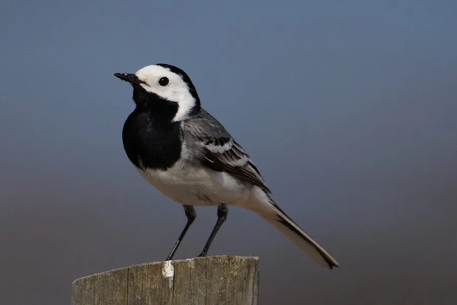

鸟类 · 动物界
白鹡鸰 Motacilla alba

黑白灰相间的小型鸣禽，尾羽细长并不断上下摆动。常在河滩、农田和城市地面快步行走，捕食昆虫，是分布最广的鸟类之一。
- 分类
- 门脊索动物门纲鸟纲目雀形目科鹡鸰科属鹡鸰属
- 栖息环境
- 河滩、湖泊、水库、稻田、湿地、草甸、农田、城市广场与建筑物附近，偏好开阔湿润地面。
- 地理分布
- 欧亚大陆与北非广布；中国各地常见，北方种群冬季南迁至南方。
- 保护级别
- IUCN 红色名录列为无危（LC）；中国列入“三有”陆生野生动物名录。
物种志
白鹡鸰体长约十六至十九厘米，体重十七至二十五克。羽色随亚种和季节变化很大：典型个体头顶、后颈和胸部黑色，脸部白色，背羽灰色，翼羽黑白相间，尾羽黑色而外侧白色。喙细尖黑色，虹膜深褐，脚细长黑色。雌雄羽色相近，雌鸟黑色部分较淡。
它栖息于河流、湖泊、水库、稻田、湿地、草甸、农田与城市广场，几乎离不开水或湿润地面。常在地面快速行走或奔跑，边走边上下摆动长尾，发现昆虫后急步啄食，也会短距离起飞在空中捕虫。繁殖期在墙缝、石隙、树洞或堤岸洞穴中筑巢，每窝产卵四至六枚。白鹡鸰广泛分布于欧亚大陆和北非，中国各地常见，北方种群冬季南迁。它适应城市环境，列入“三有”名录。
形态与习性
- 体长16–19 厘米
- 体重17–25 克
- 食性昆虫为主，兼食少量种子
- 繁殖墙缝、石隙或树洞营巢，每窝 4–6 枚
- 特征黑白灰羽色，长尾不停上下摆动
- 保护级别IUCN 无危；“三有”动物
趣味知识
- 停歇时尾巴几乎不停地下下摆动，像在打拍子。
- 常在地面快步奔跑，很少长时间静止。
- 羽色随分布区变化很大，是分类研究的经典材料。